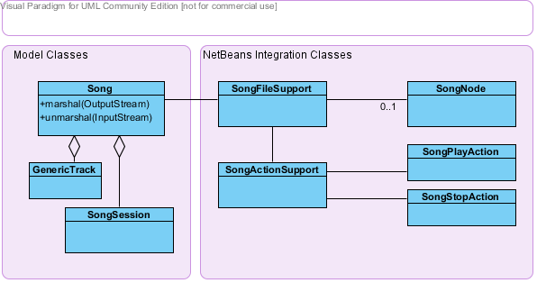

The Song is the central data-structure in the Repetitor system, it defines the musical structure and all the performance relevant data (timing, instruments etc).
This package provides:

A song is a hierarchical tree of Tracks. We use the term Track with a slightly different meaning than in the Midi-file specification. When there is possible confusion between our meaning of track and the midi-file-track we will call midi-file-track as track-data.
Tracks are arranged in a strict hierarchy, a track might have any number of sub-tracks. Every track except the root-track has exactly one parent track. The track the root of the hierarchy, is called the Master-Track. The Master-Track defines the tempo and the time-signature for all its sub-tracks. Sub-Tracks inherit certain properties from their parents. Examples of such properties are the attenuation (the volume) or the instrument. Sub-Tracks might change inherited properties. Depending on the kind of property, the own value is added to the inherited value (e.g. attenuation) or it overwrites the inherited value (e.g. instrument).